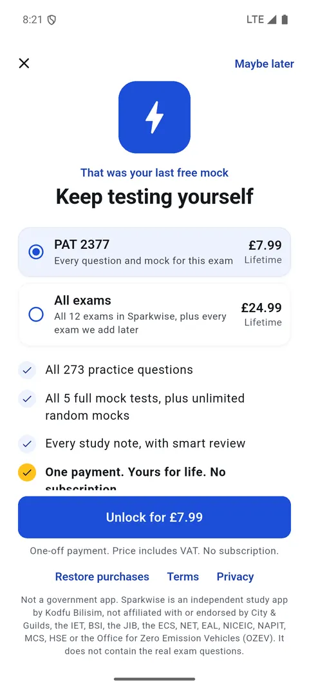

Not a government app. Sparkwise is an independent study app made by Kodfu Bilisim. It is not affiliated with or endorsed by the IET, BSI, City & Guilds, EAL, NET, the ECS, the JIB, NICEIC, NAPIT, MCS, HSE or OZEV. It does not contain the real exam questions and never reproduces BS 7671 text.
All exams › EV charging (2921-34)
EV charging exam questions (City & Guilds 2921-34)
The City & Guilds 2921-34 EV charging course ends with one online multiple-choice test: 30 questions in 1 hour, open book with the IET Code of Practice for EV charging and BS 7671, and a pass mark of about 75%. This page sets out the format and what the test covers, then gives you 8 free practice questions with answers. Sparkwise has 291 like them, with explanations, and timed mocks in the same format.
Practise EV 2921-34: get Sparkwise on Google Play Try 8 free questions
Free in the app: 89 EV charging questions and one full mock. EV 2921-34 unlock: £7.99 once for all 291 questions and every mock. No subscription. Android now; iPhone version not yet available.
On this page
The 2921-34 exam format
The full title is the Level 3 Award in the Requirements for the Design and Installation of Domestic and Small Commercial Electric Vehicle Charging Installations. It replaced 2921-31 in 2024 and is meant for electricians who already hold a Level 3 electrotechnical qualification. There is one unit and one assessment: the online test.
| Item | 2921-34 online test |
|---|---|
| Questions | 30 multiple choice |
| Time | 1 hour |
| Pass mark | About 75% (City & Guilds’ wording); Sparkwise mocks use 23 of 30 |
| Books | Open book: paper copies of the IET Code of Practice for Electric Vehicle Charging Equipment Installation (5th edition) and BS 7671 |
| Calculator | A non-programmable scientific calculator |
| How | On screen at an approved centre, usually at the end of a short course |
| Sparkwise mock | 30 questions, 1 hour, with the same topic mix |
Source: the City & Guilds 2921-34 qualification handbook (v1.3) and the 2921 qualification page. The handbook was written for BS 7671:2018+A2:2022; ask your centre which amendment your test follows now that A4:2026 is current.
What the exam covers
Design is the biggest part of the test: 12 of the 30 questions. That means maximum demand, earthing and PME, circuit protection and cable choice, which are also where the calculation questions sit.
| Learning outcome | Questions in the real test | Questions in Sparkwise |
|---|---|---|
| Key documentation and legislation | 2 | 32 |
| Types and features of EV charging equipment: modes, connectors, chargepoint and smart functions | 8 | 69 |
| Design: site survey and maximum demand, earthing and PME, circuit design, location and labels | 12 | 126 |
| Testing, commissioning and handover | 4 | 32 |
| Vehicles as energy storage in prosumer’s installations | 4 | 32 |
Expect questions on the Electric Vehicles (Smart Charge Points) Regulations 2021 and, in England, Approved Document S, as well as Section 722 of BS 7671. Sparkwise has 40 calculation questions with worked solutions, such as charging times, available capacity under load management and RCD and electrode resistance checks.

EV charging next to your other exams
EV 2921-34 sits in the same Sparkwise app as the 18th Edition, the 2391 and solar PV and battery storage. Switch exams from the Home screen; each keeps its own progress, mocks and mistakes list.
8 free EV charging exam questions
One question from each of eight Sparkwise EV topics, with the answer and a short explanation. They are original questions written from legislation, GOV.UK guidance and BS 7671, not the real City & Guilds questions, and they do not copy the IET Code of Practice.
Question 1 · Choose one answer
Where do the Smart Charge Points Regulations 2021 apply?
- England, Wales and Scotland
- England only
- The whole United Kingdom
- England and Wales only
Show the answer
Answer A: England, Wales and Scotland
The regulations extend to England and Wales and Scotland, so they cover Great Britain but not Northern Ireland.
Source: EV (Smart Charge Points) Regs 2021 · reg 1(2)
Question 2 · Select TWO answers
Which TWO names refer to the Type 1 connector? Select TWO.
- SAE J1772
- Yazaki
- Mennekes
- EV Plug Alliance
Show the answer
Answer A: SAE J1772, B: Yazaki
Type 1 is also called the SAE J1772 connector, after the American standard, or the Yazaki connector, after a manufacturer. Mennekes is Type 2.
Source: C&G 2921-34 handbook LO2.2
Question 3 · Choose one answer
A 60 A supply already carries 41 A of other load. Load management keeps the total within the supply rating. What is the most the chargepoint may draw?
- 19 A
- 32 A
- 41 A
- 60 A
Show the answer
Answer A: 19 A
Headroom = supply rating − other load = 60 A − 41 A = 19 A, so the chargepoint is curtailed to 19 A.
Worked solution. Formula: Available charging current = supply limit − other load
- Supply limit: 60 A
- Other load: 41 A
- Subtract: 60 A − 41 A = 19 A
Common mistake: Allowing the chargepoint's full 32 A would take the total to 73 A, above the 60 A rating.
Source: C&G 2921-34 handbook LO2.3
Question 4 · Choose one answer
A vehicle has a 60 kWh battery at 20%. Ignoring losses, how long will a 7.4 kW chargepoint take to bring it to 80%?
- 4.9 hours
- 8.1 hours
- 6.5 hours
- 1.6 hours
Show the answer
Answer A: 4.9 hours
Energy needed = 60% of 60 kWh = 36 kWh. Time = 36 ÷ 7.4 = 4.9 hours. Using the full 60 kWh gives 8.1 hours.
Worked solution. Formula: t = energy needed (kWh) ÷ charger power (kW)
- Energy needed: (80% − 20%) × 60 kWh = 36 kWh
- Divide by power: 36 ÷ 7.4 = 4.86 h
- Round: about 4.9 hours
Common mistake: Using the whole battery (8.1 h) or charging from 20% to 100% (6.5 h).
Source: Energy = power × time
Question 5 · Choose one answer
What must the breaking capacity of a chargepoint circuit's overcurrent device be at least equal to?
- The prospective fault current where the device is installed
- The design current of the charging point multiplied by 1.45
- The current-carrying capacity of the cable after derating
- The rated current of the main fuse supplying the premises
Show the answer
Answer A: The prospective fault current where the device is installed
A protective device must be able to interrupt the largest fault current that can flow at its point of installation, so its breaking capacity is compared with the prospective fault current.
Source: BS 7671 Reg 434.5.1
Question 6 · Choose one answer
How should the need for sprinklers or suppression near an indoor charging area be decided?
- By risk assessment and any building regulations needs
- They are always required for every indoor chargepoint
- They are never used, as EV fires cannot be suppressed
- By the DNO when it is notified about the chargepoint
Show the answer
Answer A: By risk assessment and any building regulations needs
Sprinklers or suppression are considered case by case, based on a fire risk assessment or what the relevant national building regulations require.
Source: C&G 2921-34 handbook LO3.2.5
Question 7 · Choose one answer
What is the highest electrode resistance RA that satisfies RA × IΔn ≤ 50 V with a 30 mA RCD?
- 1667 Ω
- 167 Ω
- 200 Ω
- 1500 Ω
Show the answer
Answer A: 1667 Ω
RA ≤ 50 ÷ 0.03 = 1667 Ω. In practice a much lower value is aimed for, as readings above about 200 Ω may not stay stable.
Worked solution. Formula: RA ≤ 50 V ÷ IΔn
- Convert: 30 mA = 0.03 A
- Divide: 50 ÷ 0.03 = 1666.7 Ω
- Round: 1667 Ω
Common mistake: Using 0.3 A gives 167 Ω; 200 Ω is the stability guide, not the calculated limit.
Source: BS 7671 Reg 411.5.3
Question 8 · Choose one answer
During island operation the earth fault loop impedance of a circuit is 2.3 Ω. With U0 = 230 V, what fault current flows?
- 100 A
- 529 A
- 10 A
- 1000 A
Show the answer
Answer A: 100 A
I = U0 ÷ Zs = 230 ÷ 2.3 = 100 A. Multiplying instead of dividing gives 529 A.
Worked solution. Formula: I = U0 ÷ Zs
- Divide: 230 ÷ 2.3 = 100 A
Common mistake: Multiplying 230 by 2.3 (529 A) or slipping the decimal (10 A or 1000 A).
Source: C&G 2921-34 handbook LO5.2
You’ve seen 8 of 291 questions for the EV charging (2921-34)
The Sparkwise app has all 291 across 9 topics, each with an explanation and where to look, and 40 calculations have a step-by-step worked solution. It also has timed 30-question mocks of 1 hour.
89 of them are free in the app. The EV 2921-34 unlock is £7.99 one-off: every question and every mock for this exam. Or get All exams, £24.99 one-off: all 12 exams in Sparkwise and any exam added later. No subscription.
Android now; iPhone version not yet available.
How to prepare
- Tab both books. Most answers are in the Code of Practice or Section 722 of BS 7671. With 2 minutes a question, you need to find them fast.
- Get PME and open-PEN protection straight. When a PME earth may be used for a chargepoint, and what the alternatives are, runs through many of the design questions.
- Practise the sums. Maximum demand, spare capacity, charging time from battery size and charger power, and voltage drop all appear in design questions.
- Know the smart charging rules. Where the 2021 regulations apply, default off-peak charging and the randomised delay are easy marks if you have read them once.
FAQ
How many questions are in the 2921-34 exam?
30 multiple-choice questions in 1 hour. City & Guilds gives the pass mark as approximately 75%, which is about 23 of 30. It is the only assessment for 2921-34.
Can I take books into the EV charging exam?
Yes. It is open book: paper copies of the IET Code of Practice for Electric Vehicle Charging Equipment Installation (5th edition) and BS 7671, plus a non-programmable calculator. Check with your centre which edition of BS 7671 to bring.
Can I do 2921-34 without being an electrician?
City & Guilds expects candidates to hold a Level 3 electrotechnical qualification achieved within the last 5 years, or evidence that they are current with the latest wiring regulations. The course is not a route into electrical work on its own.
Are these the real 2921 exam questions?
No. They are original practice questions on the same topics. Sparkwise is an independent app and is not linked to City & Guilds, the IET or OZEV.
How much is EV 2921-34 in Sparkwise?
Free to download, with 89 EV questions and one full mock free. The EV 2921-34 unlock is a one-off £7.99. All exams, a one-off £24.99, unlocks all 12 exams in the app, including solar PV and battery storage.
Practise the C&G 2921-34 EV charging exam in the Sparkwise app
291 original questions for the C&G 2921-34 EV charging exam, each with an explanation and where to look, and timed 30-question mocks of 1 hour. Spaced review brings back the questions you got wrong.
- Works offline. No ads, no account, no data collected.
- The same app has the 18th Edition, the ECS HS&E and every other exam: see all 12.


Free: two full topics and three questions in every other topic, and one full mock (89 questions).
EV 2921-34, £7.99 one-off: every question and every mock for this exam.
All exams, £24.99 one-off: all 12 exams in Sparkwise and every exam we add later. No subscription.
Android now; iPhone version not yet available. Sparkwise helps you prepare; it cannot promise a pass.
Where the exam facts come from
The format, time and pass mark above come from these public pages. Check them, or ask your centre, before you book.
- 2921 Electric Vehicle Charging (City & Guilds)
- Regulations: electric vehicle smart charge points (GOV.UK)
- Infrastructure for charging electric vehicles: Approved Document S (GOV.UK)
- BS 7671 18th Edition wiring regulations (IET)
Exam details can change. Sparkwise is not linked to any awarding or assessment body.